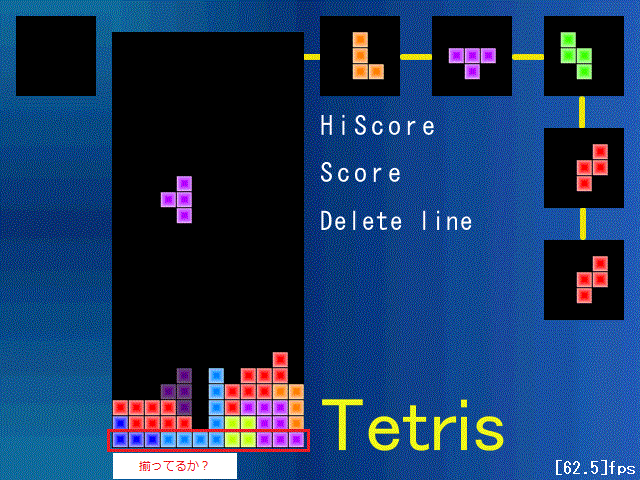
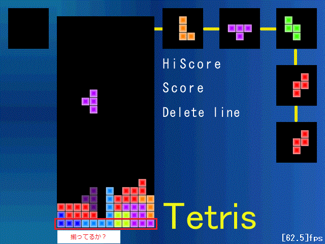

ライン消去は現在テトリミノが着地した時点で、
一番下からフィールド上にあるブロックを探索して、
1行全て埋まっているかを調べます。

探索・カウント・削除にファンクタを使っています。
わからない場合は「ファンクタ」や「叙述関数」でググってみてください。
使うのはcount_if()とlistのremove_if()です。
ファンクタで比較しているのはy座標です。
新たにDeleteLine.cppを創り、DeleteLine()関数を作成します。
ライン消去は現在テトリミノが着地した時点で、
一番下からフィールド上にあるブロックを探索して、
1行全て埋まっているかを調べます。

探索・カウント・削除にファンクタを使っています。
わからない場合は「ファンクタ」や「叙述関数」でググってみてください。
使うのはcount_if()とlistのremove_if()です。
ファンクタで比較しているのはy座標です。
新たにDeleteLine.cppを創り、DeleteLine()関数を作成します。
//DeleteLine.cpp
#include "../include/main.h"
//ライン消去
//帰り値は消したライン数
int DeleteLine(){
//y座標だけを比較するファンクタ
class BlkLineFunctor{
public:
int y;
BlkLineFunctor(int Y){
y=Y;
}
bool operator()(Block blk){
return (y==blk.y);
}
};
//1行内のブロックの個数・消去したライン数
int num=0,delLine=0;
//一番下の行から探索
for(int y=BMY+1;y>=0;y--){
//その行にあるブロックの個数を取得
num=count_if(blkList.begin(),blkList.end(),BlkLineFunctor(y*BS));
//1行全て埋まっていたら
if(num==BMX){
//その行の全てのブロックを消す
blkList.remove_if(BlkLineFunctor(y*BS));
//その行より上にあるブロックを一段下ろす
for(list<Block>::iterator it=blkList.begin();
it!=blkList.end();++it){
if(it->y<y*BS){
it->y+=BS;
}
}
//消去ライン数カウント
delLine++;
//同じところから探索再開
y++;
}//一つもなければ探索終了
else if(num==0){
break;
}
}
//消去したライン数を返す
return delLine;
}
//func.h ・ ・ ・ //Spin.cpp// bool Spin(TetriMino& t,bool isLeft); //DeleteLine.cpp// //ライン消去 //帰り値は消したライン数 int DeleteLine();
//control.cpp #include "../include/main.h" //ストックフラグ static bool stockFlag=false; //コントロール void Control(){ if(cur.flag){ ・ ・ ・ //着地したら if(cur.wait>0){ cur.wait++; } //猶予時間経過したら if(cur.wait>60){ //着地完了 cur.flag=false; //保持しているblkをフィールドへ追加 for(int i=0;i<4;i++){ blkList.push_back(cur.blk[i]); } //ライン消去 DeleteLine(); //ストックフラグをoffに stockFlag=false; } //カウントアップ cur.cnt++; } else{ ・ ・ ・ } }